南寮漁港
交通資訊
地址：新竹市南寮街
交通： 自行開車：國道一號：於新竹交流道下高速公路，沿著122縣道（光復路）前行，經巿區接東大路續行至南寮，在南寮派出 所前遇岔路，取中間道路往南寮漁港方向續行，即可到達南寮漁港。
地圖：
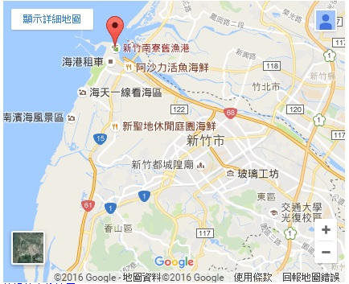景點介紹
南寮漁港最特別的是其充滿地中海風情的建築~~
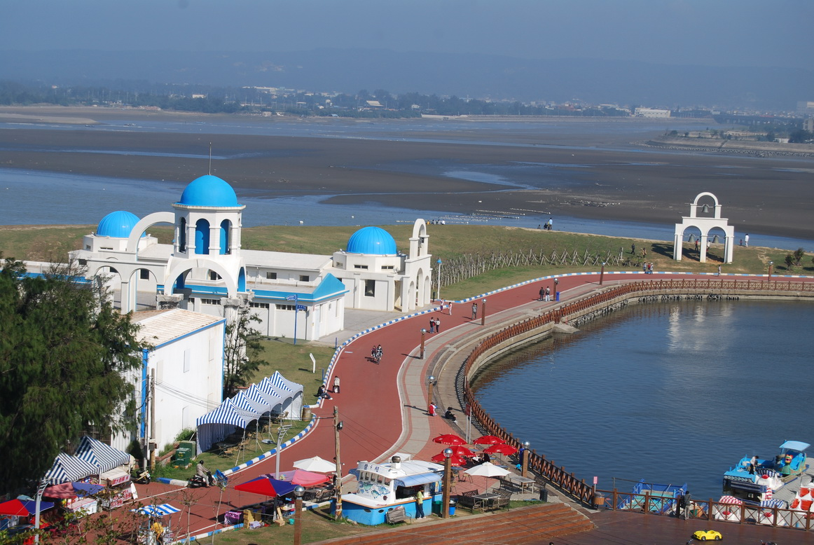魚產直銷中心
直銷中心分為兩層樓，一樓是新鮮進口、現撈魚貨的專賣，還有各種海鮮製成的乾貨
二樓是美食、熟食專區，有現做現煮的魚丸、蚵仔煎、米粉、鮮魚湯...等
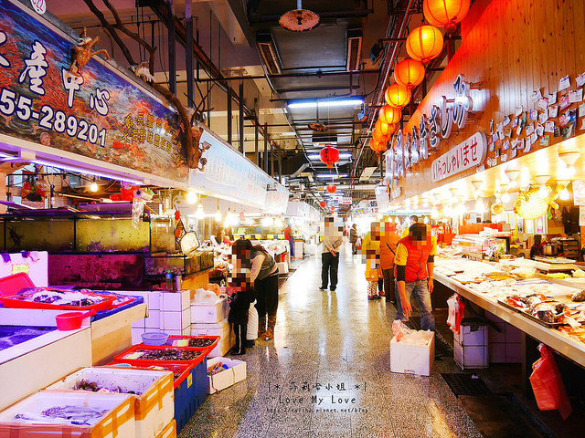十七公里海岸線
如果有時間建議可以到附近租腳踏車沿著十七公里海岸線騎，非常舒服~~
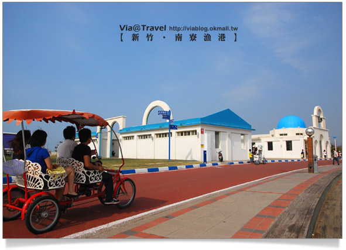附近推薦景點
新月沙灘
如果覺得已經到海邊很想踩踩海水
建議可以到附近的新月沙灘走走~~
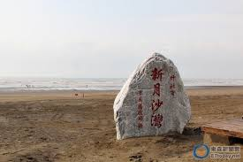建議可以下午去，不會太熱也可以順道看美麗的夕陽~~
內灣老街
交通資訊
地址：新竹市南寮街
交通： 自行開車：由在竹林交流道下，循120縣道往南接台3線即可到達內灣老街。
地圖：
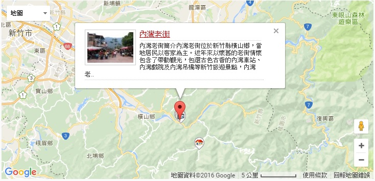景點介紹
新竹另一個必去的景點就是內灣老街，最特別的是懷舊的老街情懷，包含古色古香的內灣車站、內灣戲院及內灣吊橋，會在以下一一簡介~~
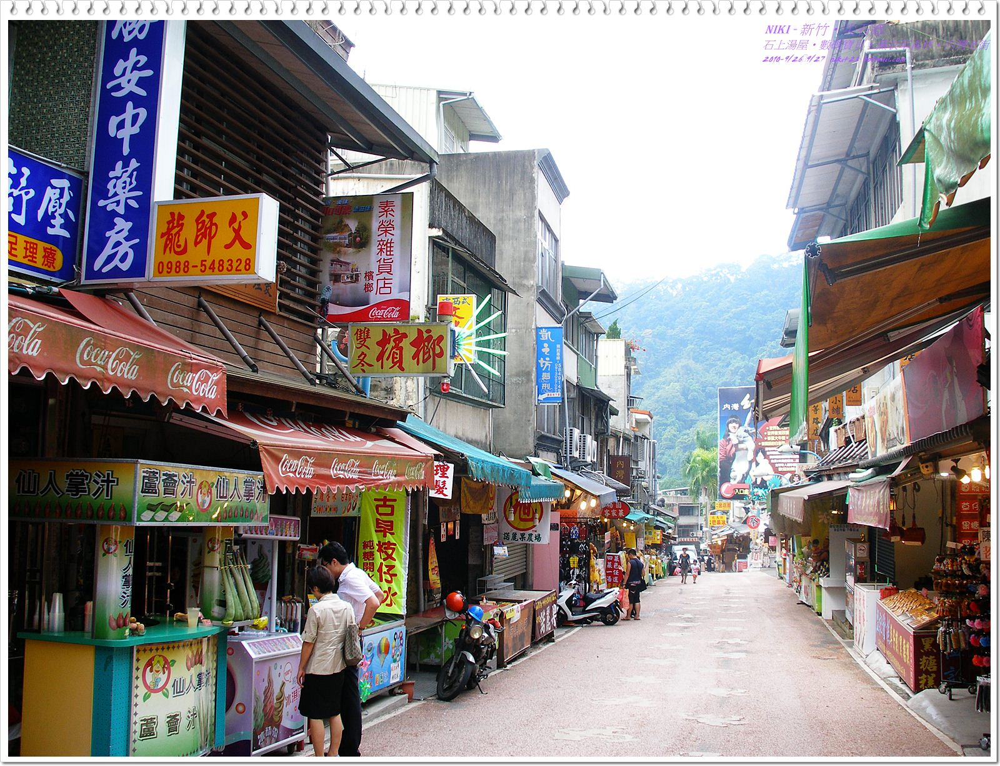內灣火車站
建議可以搭乘內灣支線的火車，欣賞沿途風景~~
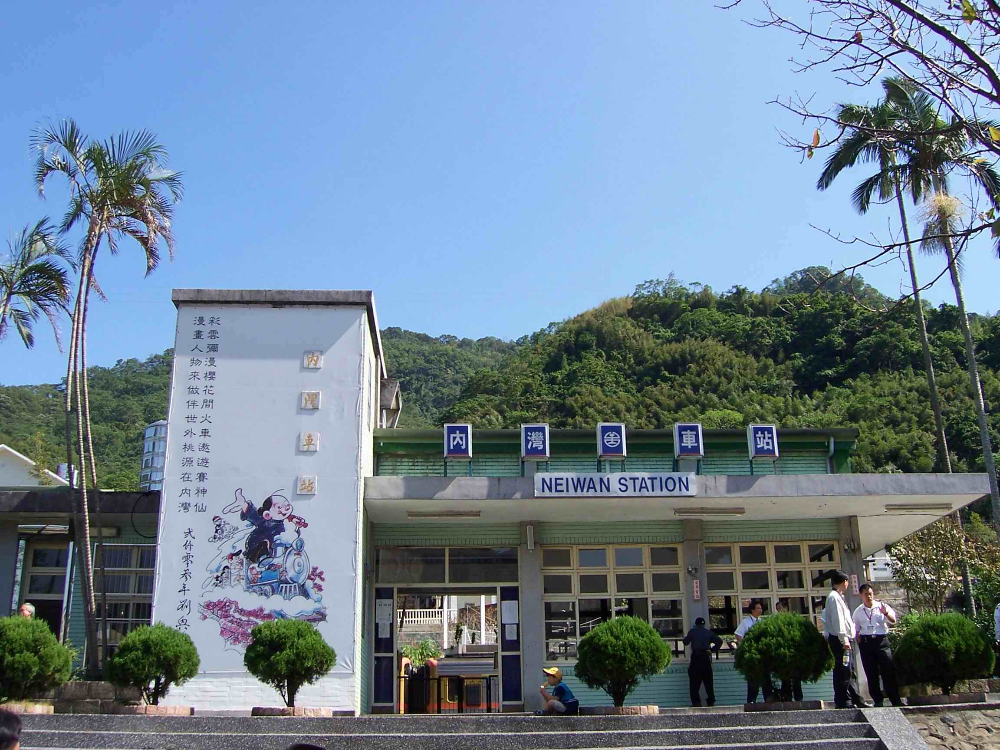內灣戲院
內灣戲院最早於民國39年啓用，主要是為了在山林中辛苦勞動的工人所建 但也成為當時僅有一千多人的小村落的最主要休閒娛樂場所 兩層樓的日式傳統建築，以木材構成，可以進去裡面感受懷舊風情
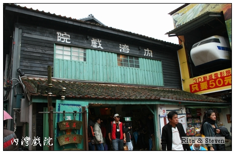內灣吊橋
內灣吊橋昔日為穿越油羅溪來往南坪的交通要道，擁有雙橋墩的構造，站在鋼索的吊橋上，可觀看整個油羅溪河谷的景色。
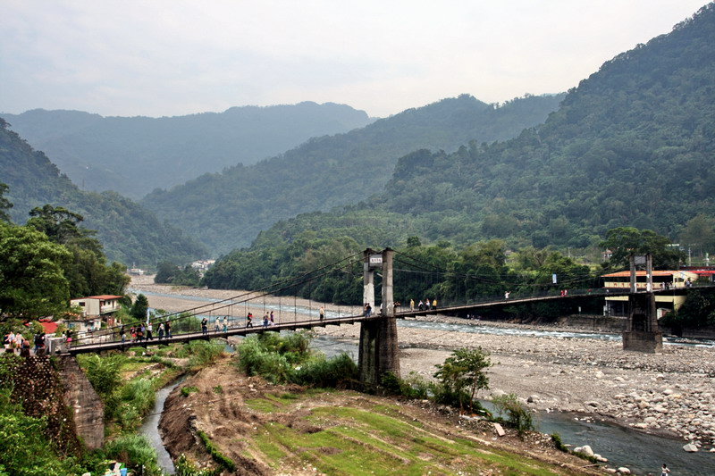附近推薦景點
內灣賞螢
每年四到五月可以到內灣欣賞螢火蟲~~
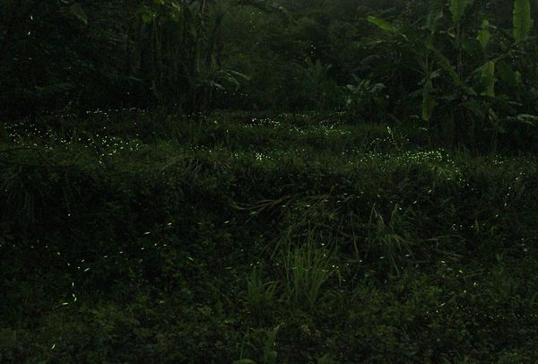北埔老街
交通資訊
地址：新竹縣北埔鄉北埔街
交通： 自行開車：由竹東或峨眉沿3號省道進入北埔，至北埔車站轉向秀巒山下的中正路直行即達北埔老街。
地圖：

景點介紹
北埔老街有很多必吃客家傳統小吃，可以享受充滿客家風情的旅行。
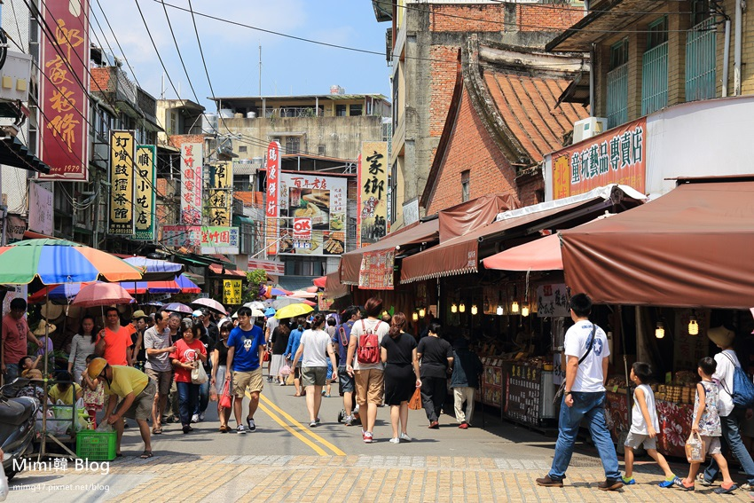慈天宮
整個北埔老街，似乎就是以這座古樸的慈天宮為中心發展起來，最熱鬧的區域就集中在廟口附近的十字路一帶
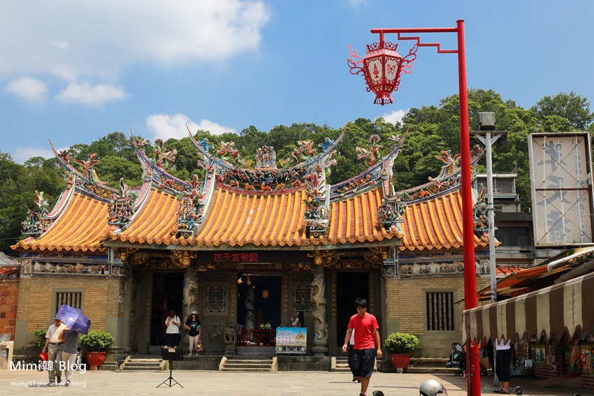北埔擂茶
到了北埔別忘了體驗客家擂茶，自己親手揮發汗水同心協力磨的擂茶，別有一番風味唷~~
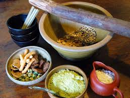附近推薦景點
北埔冷泉
既然來到北埔怎麼能錯過北埔冷泉呢，從北埔至冷泉車行約20分鐘，冷泉水質非常特殊，傳說浸泡冷泉具多種療效，走我們來享受當今最熱門的負離子滋潤喔！
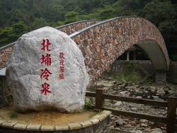非常適合全家大小到溪邊泡泡腳，不過也要注意安全喔~
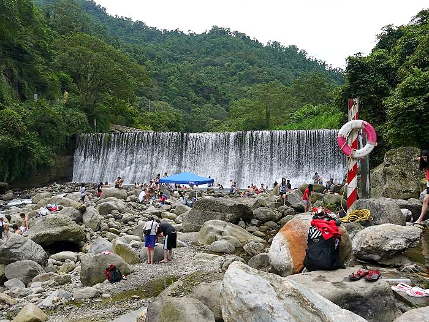